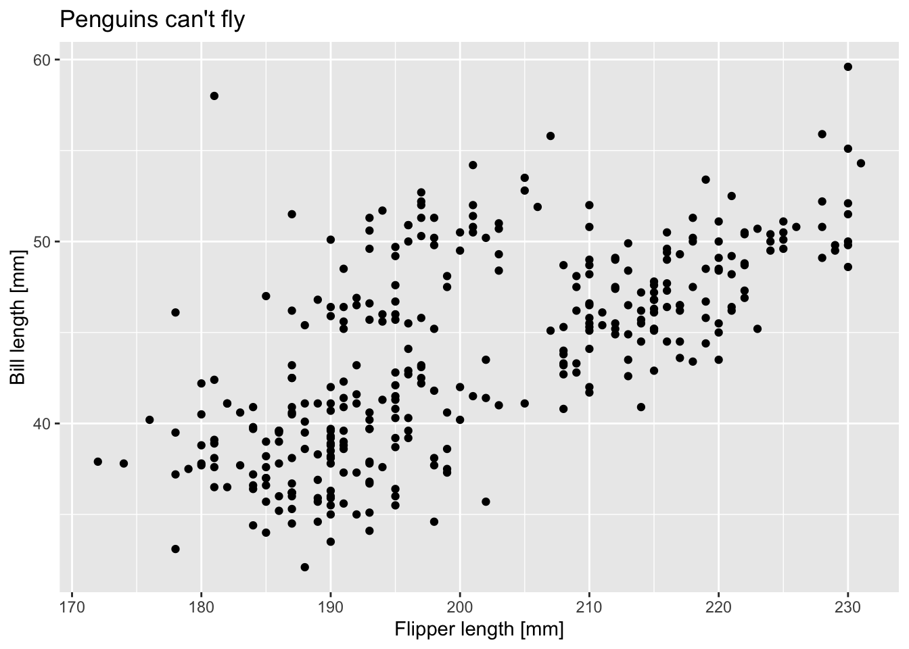
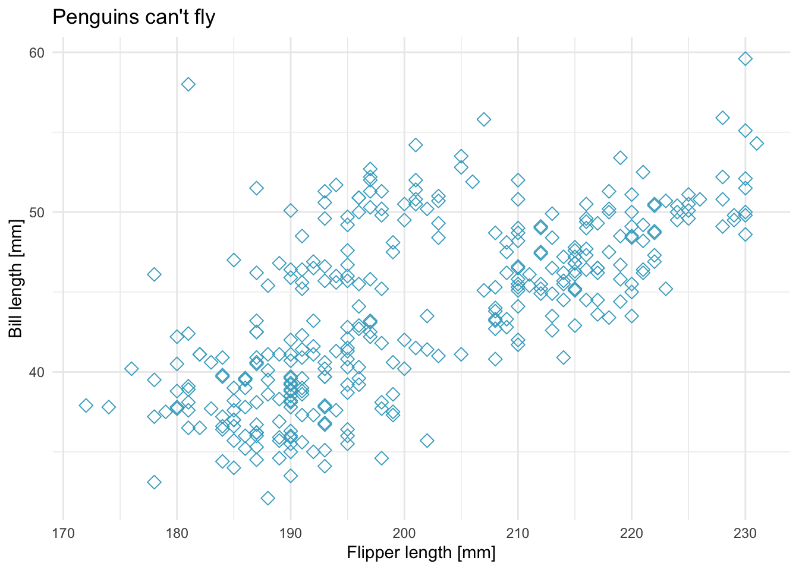
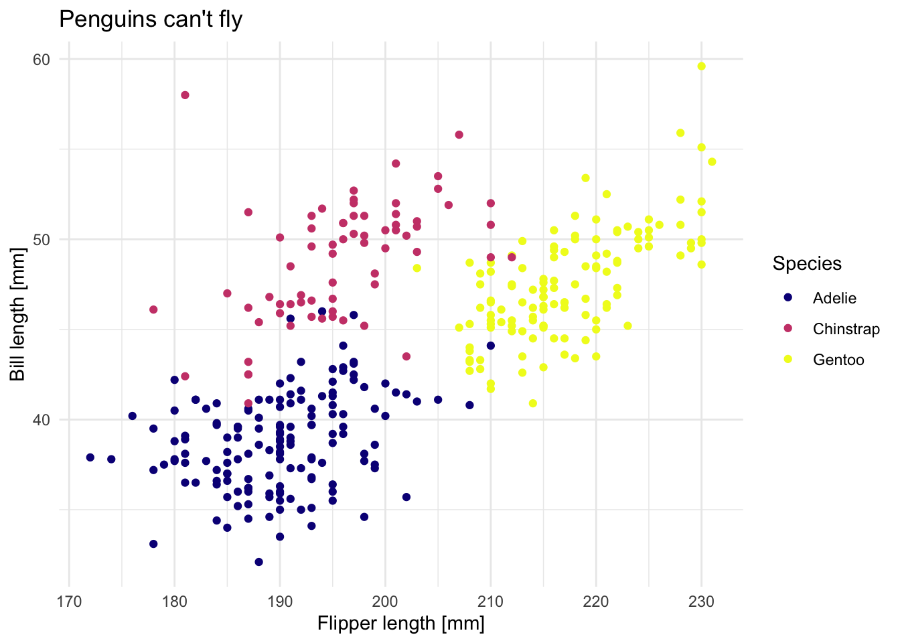
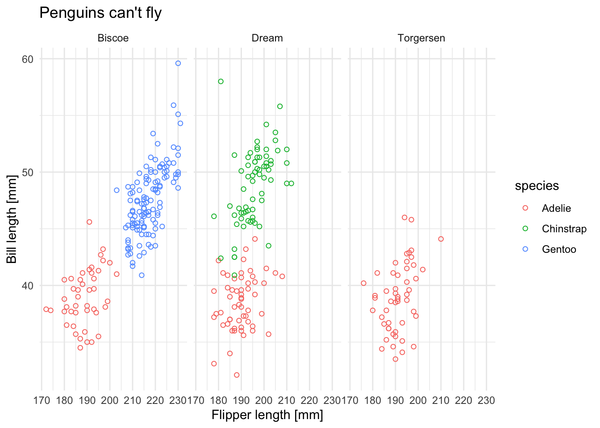
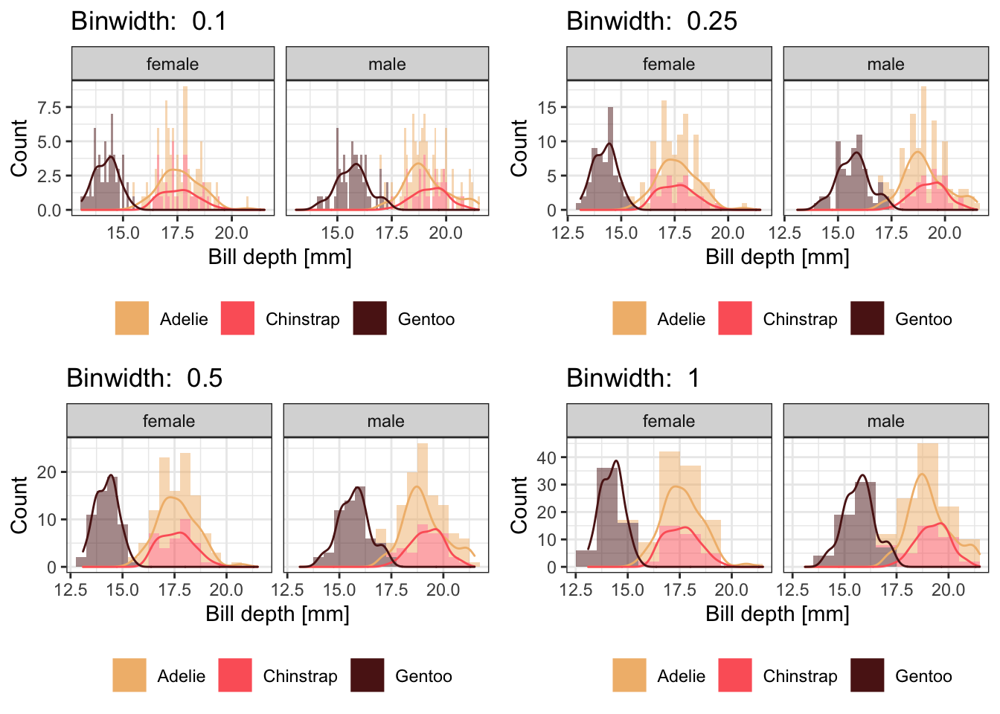
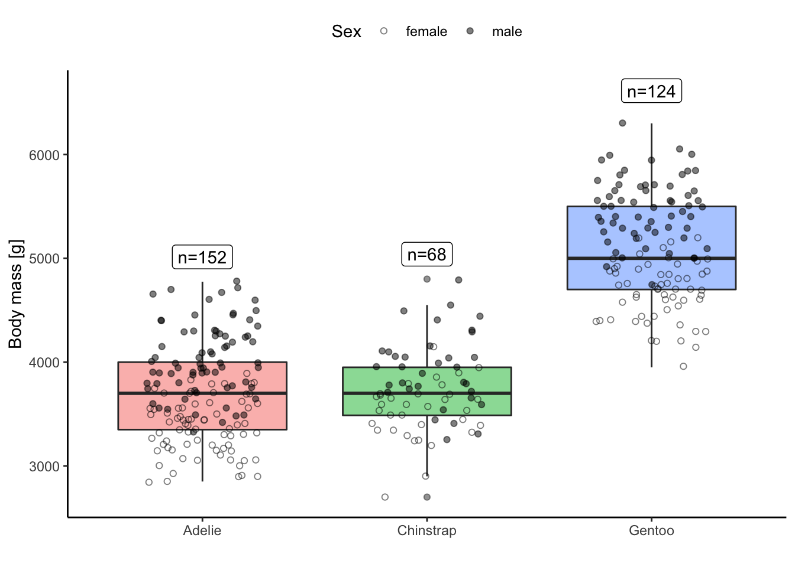
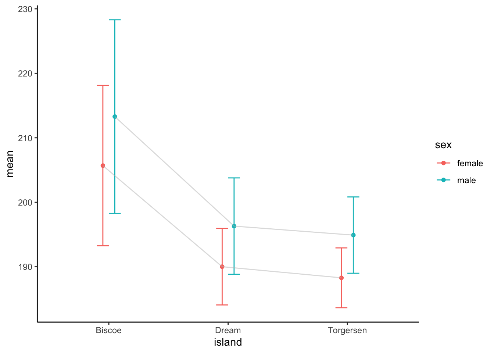
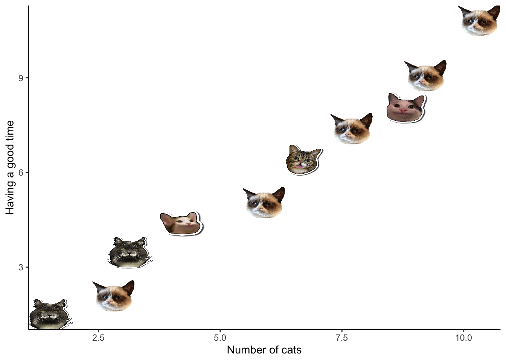

Solution Data visualization using ggplot2
Maximilian H.K. Hesselbarth
2022-03-25

Again, we are using the palmerpenguins package, as well as the ggplot2 package. Since ggplot2 is part of the tidyverse, you can just load the entire tidyverse again. Last, load the cowplot packages to combine plots.
library(tidyverse)
## ── Attaching packages ─────────────────────────────────────── tidyverse 1.3.1 ──
## ✓ tibble 3.1.6 ✓ dplyr 1.0.8
## ✓ tidyr 1.2.0 ✓ stringr 1.4.0
## ✓ readr 2.1.2 ✓ forcats 0.5.1
## ✓ purrr 0.3.4
## ── Conflicts ────────────────────────────────────────── tidyverse_conflicts() ──
## x dplyr::filter() masks stats::filter()
## x dplyr::lag() masks stats::lag()
library(cowplot)
library(palmerpenguins)Take either the penguins or the penguins_raw data set and create a scatterplot using two continuous variables. Make sure to format the axis titles and add a figure title.
ggplot(data = penguins) +
geom_point(aes(x = flipper_length_mm, y = bill_length_mm)) +
labs(x = "Flipper length [mm]", y = "Bill length [mm]", title = "Penguins can't fly")
## Warning: Removed 2 rows containing missing values (geom_point).
Next, change, the overall theme, use a different point shape, size and point color.
ggplot(data = penguins) +
geom_point(aes(x = flipper_length_mm, y = bill_length_mm), shape = 5, size = 2.5, color = "#45ACC8") +
labs(x = "Flipper length [mm]", y = "Bill length [mm]", title = "Penguins can't fly") +
theme_minimal()
## Warning: Removed 2 rows containing missing values (geom_point).
Next, use at least one of the discrete variables in the data set and use it to a) set different point colors based on the discrete variable and b) wrap the plot using facets. Try to use different colors than the default color scheme.
ggplot(data = penguins) +
geom_point(aes(x = flipper_length_mm, y = bill_length_mm, col = species), shape = 19) +
scale_color_viridis_d(name = "Species", option = "C") +
labs(x = "Flipper length [mm]", y = "Bill length [mm]", title = "Penguins can't fly") +
theme_minimal()
## Warning: Removed 2 rows containing missing values (geom_point).
ggplot(data = penguins) +
geom_point(aes(x = flipper_length_mm, y = bill_length_mm, col = species), shape = 1) +
facet_grid(. ~ island) +
labs(x = "Flipper length [mm]", y = "Bill length [mm]", title = "Penguins can't fly") +
theme_minimal()
## Warning: Removed 2 rows containing missing values (geom_point).
Try to make a histogram of the bill depth separated by species and sex. You can use colors, fills, facets or any other idea you have to separate the discrete classes. Try out different bin widths and see how much the plots changes. Last, can you add a density curve to the histogram? To compare the bin widths, combine at least two different plots to one (using cowplot)
bins <- c(0.25, 0.5, 0.75, 1.0)
gg_list <- purrr::map(bins, function(i) {
ggplot(data = dplyr::filter(penguins, !is.na(sex)),
aes(x = bill_depth_mm)) +
geom_histogram(aes(y = ..count.., fill = species), col = "black", alpha = 0.5, binwidth = i) +
geom_density(aes(x = bill_depth_mm, y = i * ..count.., col = species)) +
facet_wrap(. ~ sex) +
scale_fill_manual(name = "", values = c("#F1BB7B", "#FD6467", "#5B1A18")) +
scale_color_manual(name = "", values = c("#F1BB7B", "#FD6467", "#5B1A18")) +
labs(x = "Bill depth [mm]", y = "Count", title = paste("Binwidth: ", i)) +
theme_bw() +
theme(legend.position = "bottom")
})
cowplot::plot_grid(plotlist = gg_list)
Visualize the body mass of all species using a boxplot. Additionally, to the boxplot, also add the raw data distribution (as points), the number of individuals for each species (as text) and some information about the sex differences (however you want).
pengs_n <- dplyr::group_by(penguins, species) %>%
dplyr::summarise(n = dplyr::n(),
body_max = max(body_mass_g, na.rm = TRUE) * 1.05)
ggplot(data = penguins, aes(x = species, y = body_mass_g)) +
geom_boxplot(aes(fill = species), alpha = 0.5) +
geom_jitter(aes(shape = sex), width = 0.25, fill = "grey", col = "black", alpha = 0.5) +
geom_label(data = pengs_n, aes(x = species, y = body_max, label = paste0("n=", n))) +
scale_shape_manual(name = "Sex", values = c(1, 19), na.translate = FALSE) +
labs(x = "", y = "Body mass [g]") +
theme_classic() +
guides(fill = "none") +
theme(legend.position = "top")
## Warning: Removed 2 rows containing non-finite values (stat_boxplot).
## Warning: Removed 11 rows containing missing values (geom_point).
Summarize the penguins data set by two discrete variables and calculate the mean flipper length. Create a plot showing the mean length for the two groups including an error measure (e.g., mean +/- sd).
dplyr::group_by(penguins, island, sex) %>%
dplyr::summarise(mean = mean(flipper_length_mm, na.rm = TRUE),
sd = sd(flipper_length_mm, na.rm = TRUE), .groups = "drop") %>%
tidyr::drop_na(sex) %>%
ggplot() +
geom_point(aes(x = island, y = mean, col = sex), position = position_dodge(width = 0.2)) +
geom_errorbar(aes(x = island, ymin = mean - sd, ymax = mean + sd, col = sex), width = 0.2,
position = position_dodge(width = 0.2)) +
geom_line(aes(x = island, y = mean, group = sex), col = "grey", alpha = 0.5,
position = position_dodge(width = 0.2)) +
theme_classic()
